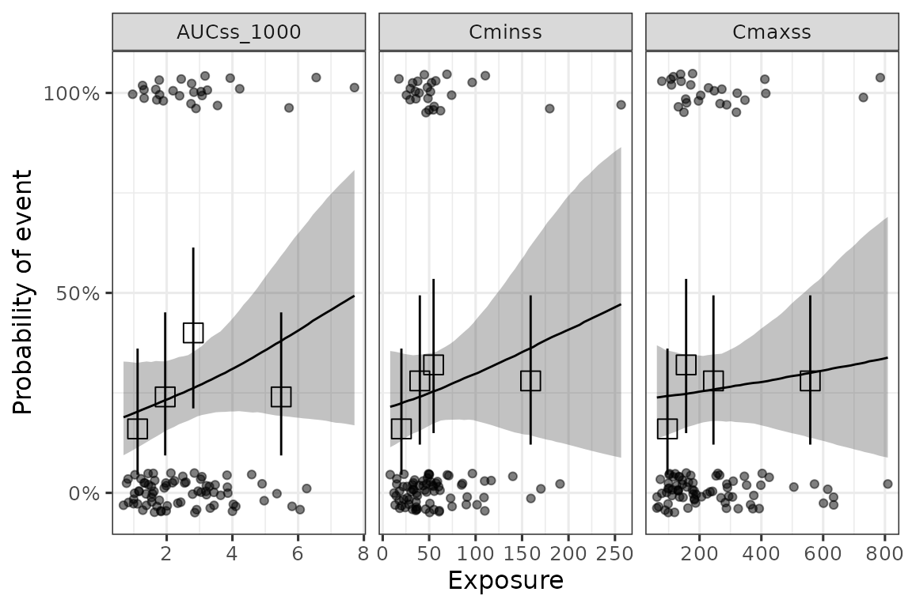
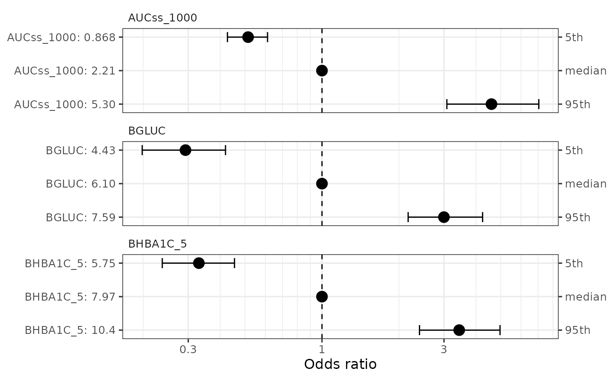

1. Basic workflow for ER with binary endpoint
basic_workflow_bin.RmdThis vignette provides a basic workflow for the development of ER models for binary endpoints and subsequent simulation from the developed ER model.
Data
We will use an example simulated dataset included in the package
(d_sim_binom_cov) for the analysis. In this document we use
hypoglycemia (hgly2) as an example AE. Another example AE is diarrhea
(dr2), where you would see fairly flat ER curve.
data(d_sim_binom_cov)
head(d_sim_binom_cov) |>
gt::gt() |>
gt::fmt_number(n_sigfig = 3)| ID | AETYPE | AEFLAG | Dose_mg | AUCss | Cmaxss | Cminss | BAGE | BWT | BGLUC | BHBA1C | RACE | VISC |
|---|---|---|---|---|---|---|---|---|---|---|---|---|
| 1.00 | hgly2 | 0 | 200 | 866 | 64.3 | 10.1 | 84.4 | 74.1 | 4.65 | 31.5 | White | No |
| 1.00 | dr2 | 0 | 200 | 866 | 64.3 | 10.1 | 84.4 | 74.1 | 4.65 | 31.5 | White | No |
| 1.00 | ae_covsel_test | 0 | 200 | 866 | 64.3 | 10.1 | 84.4 | 74.1 | 4.65 | 31.5 | White | No |
| 2.00 | hgly2 | 0 | 200 | 1,710 | 166 | 27.3 | 59.1 | 88.2 | 7.24 | 41.9 | White | No |
| 2.00 | dr2 | 0 | 200 | 1,710 | 166 | 27.3 | 59.1 | 88.2 | 7.24 | 41.9 | White | No |
| 2.00 | ae_covsel_test | 1.00 | 200 | 1,710 | 166 | 27.3 | 59.1 | 88.2 | 7.24 | 41.9 | White | No |
d_sim_binom_cov_2 <-
d_sim_binom_cov |>
mutate(
AUCss_1000 = AUCss / 1000, BAGE_10 = BAGE / 10,
BWT_10 = BWT / 10, BHBA1C_5 = BHBA1C / 5,
Dose = paste(Dose_mg, "mg")
)
# Grade 2+ hypoglycemia
df_er_ae_hgly2 <- d_sim_binom_cov_2 |> filter(AETYPE == "hgly2")
# Grade 2+ diarrhea
df_er_ae_dr2 <- d_sim_binom_cov_2 |> filter(AETYPE == "dr2")We also defines variables that is used in the analysis.
1. Basic model development
dev_ermod_bin() function can be used to develop basic ER
model. (Note that this function can also be used for models with
covariates, if you already know the covariates to be included.)
set.seed(1234)
ermod_bin <- dev_ermod_bin(
data = df_er_ae_hgly2,
var_resp = var_resp,
var_exposure = "AUCss_1000"
)
ermod_bin
#>
#> ── Binary ER model ─────────────────────────────────────────────────────────────
#> ℹ Use `plot_er()` to visualize ER curve
#>
#> ── Developed model ──
#>
#> stan_glm
#> family: binomial [logit]
#> formula: AEFLAG ~ AUCss_1000
#> observations: 500
#> predictors: 2
#> ------
#> Median MAD_SD
#> (Intercept) -2.04 0.23
#> AUCss_1000 0.41 0.08
#> ------
#> * For help interpreting the printed output see ?print.stanreg
#> * For info on the priors used see ?prior_summary.stanregYou can compare the observed data with the model fit using
plot_er() function.
# Using `*` instead of `+` so that scale can be
# applied for both panels (main plot and boxplot)
plot_er_gof(ermod_bin, var_group = "Dose", show_coef_exp = TRUE) *
xgxr::xgx_scale_x_log10()
MCMC samples can be obtained with as_draws() family of
functions, such as as_draws_df().
draws_df <- as_draws_df(ermod_bin)
draws_df_summary <-
posterior::summarize_draws(draws_df)
draws_df_summary |>
gt::gt() |>
gt::fmt_number(n_sigfig = 3)| variable | mean | median | sd | mad | q5 | q95 | rhat | ess_bulk | ess_tail |
|---|---|---|---|---|---|---|---|---|---|
| (Intercept) | −2.05 | −2.04 | 0.234 | 0.228 | −2.43 | −1.67 | 1.00 | 2,230 | 1,870 |
| AUCss_1000 | 0.412 | 0.412 | 0.0761 | 0.0765 | 0.288 | 0.537 | 1.00 | 2,150 | 2,140 |
You can predict the probability of events for a given exposure level
with sim_er_new_exp() function.
Here, the prediction is done for AUCss_1000 of 1, 2, 3 (AUCss of
1000, 2000, 3000), and the output is the median and 95% CI of the
predicted probability. You can set output_type = "draw" to
get the raw posterior draws.
ersim_med_qi <- sim_er_new_exp(
ermod_bin,
exposure_to_sim_vec = 1:3,
output_type = "median_qi"
)
ersim_med_qi
#> # A tibble: 3 × 11
#> AUCss_1000 .row .epred .epred.lower .epred.upper .linpred .linpred.lower
#> <int> <int> <dbl> <dbl> <dbl> <dbl> <dbl>
#> 1 1 1 0.164 0.122 0.213 -1.63 -1.97
#> 2 2 2 0.228 0.189 0.270 -1.22 -1.46
#> 3 3 3 0.308 0.266 0.354 -0.811 -1.02
#> # ℹ 4 more variables: .linpred.upper <dbl>, .width <dbl>, .point <chr>,
#> # .interval <chr>2. Selection of exposure metrics
dev_ermod_bin_exp_sel() function can be used to select
the best exposure metric(s) from a list of candidate exposure metrics.
In this case, AUCss_1000 is selected as the best exposure metric, as it
had the highest elpd (expected log predictive density).1
set.seed(1234)
ermod_bin_exp_sel <-
dev_ermod_bin_exp_sel(
# Use reduced N to make the example run faster
data = slice_sample(df_er_ae_hgly2, n = 100),
var_resp = var_resp,
var_exp_candidates = c("AUCss_1000", "Cmaxss", "Cminss"),
# Use reduced iter to make the example run faster
iter = 1000
)
#> ℹ The exposure metric selected was: AUCss_1000
ermod_bin_exp_sel
#>
#> ── Binary ER model & exposure metric selection ─────────────────────────────────
#> ℹ Use `plot_er_exp_sel()` for ER curve of all exposure metrics
#> ℹ Use `plot_er()` with `show_orig_data = TRUE` for ER curve of the selected exposure metric
#>
#> ── Exposure metrics comparison ──
#>
#> elpd_diff se_diff
#> AUCss_1000 0.00 0.00
#> Cminss -0.76 0.70
#> Cmaxss -0.91 0.97
#>
#> ── Selected model ──
#>
#> stan_glm
#> family: binomial [logit]
#> formula: AEFLAG ~ AUCss_1000
#> observations: 100
#> predictors: 2
#> ------
#> Median MAD_SD
#> (Intercept) -1.59 0.45
#> AUCss_1000 0.20 0.15
#> ------
#> * For help interpreting the printed output see ?print.stanreg
#> * For info on the priors used see ?prior_summary.stanregThe ER curve for all the evaluated exposure metrics can be generated
with plot_er_exp_sel() function.
plot_er_exp_sel(ermod_bin_exp_sel) +
xgxr::xgx_scale_x_log10()
3. Selection of covariates
dev_ermod_bin_cov_sel() function can be used to select
the best covariates from a list of candidate covariates. In this case,
HbA1c (BHBA1C_5) and glucose (BGLUC) are selected, in addition to the
exposure metric AUCss_1000 as predictors.
set.seed(1234)
ermod_bin_cov_sel <-
dev_ermod_bin_cov_sel(
data = df_er_ae_hgly2,
var_resp = var_resp,
var_exposure = "AUCss_1000",
var_cov_candidate = var_cov_ae_hgly2,
verbosity_level = 2
)
ermod_bin_cov_sel
#>
#> ── Binary ER model & covariate selection ───────────────────────────────────────
#> ℹ Use `plot_submod_performance()` to see variable selection performance
#> ℹ Use `plot_er()` with `marginal = TRUE` to visualize marginal ER curve
#>
#> ── Selected model ──
#>
#> stan_glm
#> family: binomial [logit]
#> formula: AEFLAG ~ AUCss_1000 + BHBA1C_5 + BGLUC
#> observations: 500
#> predictors: 4
#> ------
#> Median MAD_SD
#> (Intercept) -11.00 1.12
#> AUCss_1000 0.49 0.08
#> BHBA1C_5 0.50 0.09
#> BGLUC 0.74 0.13
#> ------
#> * For help interpreting the printed output see ?print.stanreg
#> * For info on the priors used see ?prior_summary.stanregThe plot below shows that AUCss_1000, BHBA1C_5, and BGLUC contributes to improving the model performance, and after then the inclusion of no other covariates improves the model performance.
plot_submod_performance(ermod_bin_cov_sel)
In some cases, you might see a warning message like below. This indicates that approximation of leave-one-out cross-validation performance (PSIS-LOO) is not reliable.
Warning: In the recalculation of the reference model's PSIS-LOO CV weights for
the performance evaluation, ... Pareto k-values are in the interval...`. Alternatively to the default cv_method = "LOO", you can
use k-fold cross-validation by settingcv_method = "kfold"
in dev_ermod_bin_cov_sel() function. This can take longer
time to run, but it can be more reliable in the cases where LOO is not
reliable. You can also set validate_search = TRUE to let
the function perform the variable selection for each fold separately,
rather than using the selected variable sequence from the full dataset
evaluation.
set.seed(1234)
ermod_bin_cov_sel_kfold <-
dev_ermod_bin_cov_sel(
data = df_er_ae_hgly2,
var_resp = var_resp,
var_exposure = "AUCss_1000",
var_cov_candidate = var_cov_ae_hgly2,
cv_method = "kfold",
validate_search = TRUE,
verbosity_level = 2
)Added bonus of using k-fold cv is that you can visualize how often each variable is selected in the model. Here, as you can see (and as expected), HbA1c (BHBA1C_5) and glucose (BGLUC) are highly related and they are almost interchangeably selected in the second and third positions. Note that the function enforces the exposure metric to be included first in the model.
ermod_bin_cov_sel_kfold
#>
#> ── Binary ER model & covariate selection ───────────────────────────────────────
#> ℹ Use `plot_submod_performance()` to see variable selection performance
#> ℹ Use `plot_var_ranking()` to see variable ranking
#> ℹ Use `plot_er()` with `marginal = TRUE` to visualize marginal ER curve
#>
#> ── Selected model ──
#>
#> stan_glm
#> family: binomial [logit]
#> formula: AEFLAG ~ AUCss_1000 + BHBA1C_5 + BGLUC
#> observations: 500
#> predictors: 4
#> ------
#> Median MAD_SD
#> (Intercept) -10.97 1.20
#> AUCss_1000 0.49 0.09
#> BHBA1C_5 0.50 0.09
#> BGLUC 0.73 0.14
#> ------
#> * For help interpreting the printed output see ?print.stanreg
#> * For info on the priors used see ?prior_summary.stanreg
plot_submod_performance(ermod_bin_cov_sel_kfold)
plot_var_ranking(ermod_bin_cov_sel_kfold)
4. Marginal ER prediction
You can simulate the marginal ER relationship, i.e. ER relationships
for “marginalized”, or averaged, response for the population of
interest, using sim_er_new_exp_marg() function. By default,
the covariate distribution is from the original data, but you can also
supply other distribution with data_cov argument.
ersim_new_exp_marg_med_qi <- sim_er_new_exp_marg(
ermod_bin_cov_sel,
exposure_to_sim_vec = c(2:6),
output_type = "median_qi"
)
ersim_new_exp_marg_med_qi
#> # A tibble: 5 × 14
#> .id_exposure AUCss_1000 .epred .epred.lower .epred.upper .linpred
#> <int> <int> <dbl> <dbl> <dbl> <dbl>
#> 1 1 2 0.226 0.190 0.263 -1.50
#> 2 2 3 0.306 0.266 0.348 -1.01
#> 3 3 4 0.399 0.338 0.457 -0.518
#> 4 4 5 0.496 0.412 0.583 -0.0288
#> 5 5 6 0.595 0.482 0.701 0.470
#> # ℹ 8 more variables: .linpred.lower <dbl>, .linpred.upper <dbl>,
#> # .prediction <dbl>, .prediction.lower <dbl>, .prediction.upper <dbl>,
#> # .width <dbl>, .point <chr>, .interval <chr>
plot_er(ersim_new_exp_marg_med_qi, marginal = TRUE)
5. Evaluation of covariate effects
You can visualize the effect of the covariates with
sim_coveff() and plot_coveff() functions. You
can see that all three predictors have fairly strong effects on the odds
ratio of hypoglycemia.
coveffsim <- sim_coveff(ermod_bin_cov_sel)
plot_coveff(coveffsim)
print_coveff(coveffsim)
#> # A tibble: 9 × 5
#> var_label value_label value_annot `Odds ratio` `95% CI`
#> <chr> <chr> <chr> <chr> <chr>
#> 1 AUCss_1000 0.868 5th 0.514 "[0.427, 0.613]"
#> 2 AUCss_1000 2.21 median 1 " "
#> 3 AUCss_1000 5.30 95th 4.60 "[3.08, 7.04]"
#> 4 BHBA1C_5 5.75 5th 0.330 "[0.237, 0.455]"
#> 5 BHBA1C_5 7.97 median 1 " "
#> 6 BHBA1C_5 10.4 95th 3.44 "[2.41, 4.97]"
#> 7 BGLUC 4.43 5th 0.293 "[0.198, 0.420]"
#> 8 BGLUC 6.10 median 1 " "
#> 9 BGLUC 7.59 95th 3.00 "[2.17, 4.25]"